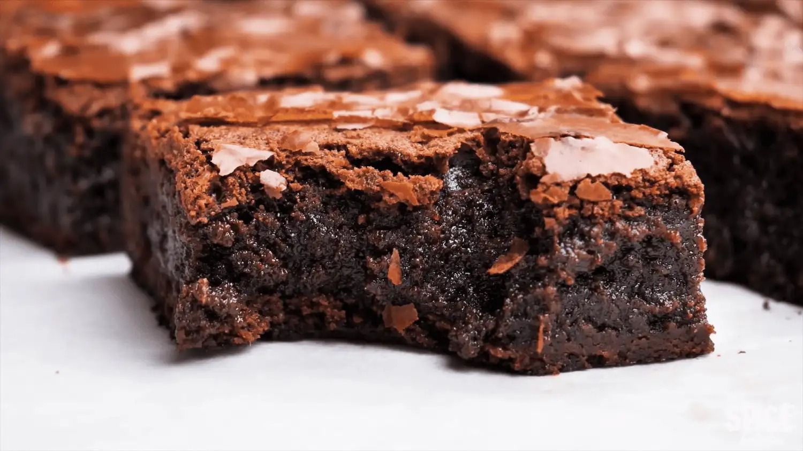

Fudgy Brownie

Description
For all the chocolate lovers out there, get ready to experience a treat that’s straight out of a Willy Wonka dream! Yes, it is the Best Fudgy Brownie Recipe I am talking about.
Fudgy brownies are one of my top choices for chocolate cakes. Their gooey texture and concentrated chocolate flavor make every bite a delightful experience. While the perfect brownies look fantastic on their own, they are always dressed for celebration—no extra decoration is needed!
Perhaps the best part of a fudgy brownie lies in its perfect contrast of textures. The top has a crispy layer with a slight crunch, while the insides remain gooey and melt as soon as you take a bite. Chewy and crunchy—that is exactly why this best brownie recipe is my favorite go-to every time I am craving a snack!
Ready to try out this fudgy delight? Let’s start mixing up the delicious batter to make brownie recipe!
Ingredients
- 200g Semi-sweet dark chocolate
- 115g Butter
- 200g Granulated sugar
- 110g Brown sugar
- 3 medium size Eggs
- 1.5g Salt
- 4g Vanilla essence
- 62g All-purpose flour
- 22g Cocoa powder
Steps
- Grease a 7×7-inch dark metal pan with melted butter and line with parchment paper, leaving overhang on all sides.
- Preheat your oven at 180℃.
- Take a little water in a saucepan and bring it to a simmer.
- In the meantime cut the chocolate into small pieces and place them in a heat resistant bowl. Place the bowl on top of the simmering water making sure that the bottom of the bowl isn’t touching the water.
- Add butter to the bowl and whisk the chocolate and the butter together until it melts and becomes smooth, then take it off the heat and let it cool.
- In the meantime, in a separate bowl, put white and brown sugar.
- Add 1 egg at a time and mix properly using a hand whisk.
- When the mixture is a little creamy add the salt, the vanilla essence, and the cooled chocolate and butter mixture. Mix everything well. The batter will have a thicker consistency.
- Sift the flour and the cocoa powder into the bowl and carefully fold them into the mixture using a spatula.
- Pour the batter into the prepared baking pan then gently shake and tap the tin couple of times to spread the batter evenly.
- Bake it in preheated oven for about 30 minutes.
- When your brownie is baked take it out of the oven and let it cool for at least 15 minutes. Slice them into 9 squares and enjoy your warm fudgy brownies.
Home